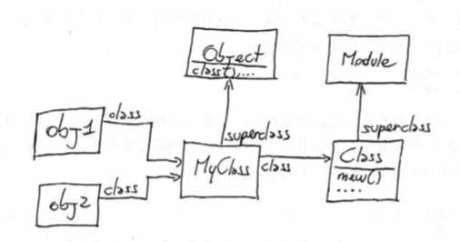
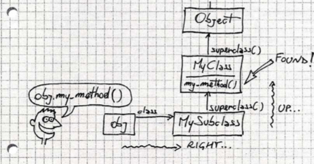
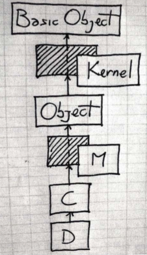
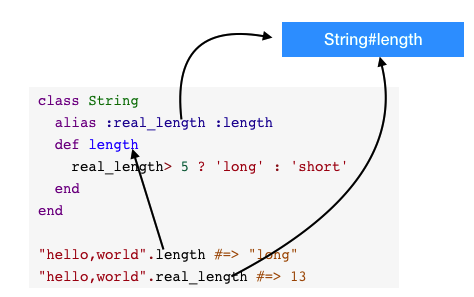
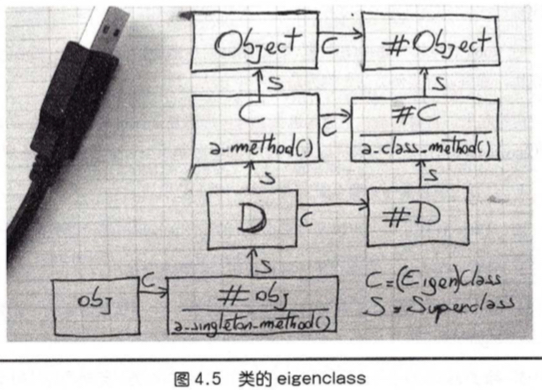

Ruby的一些笔记¶
Ruby原理¶
- 使用Ripper对ruby脚本进行分词
- Yacc,解析器,ruby使用了更高级的Bison,他们使用以
.y扩展名的语法文件
提问题¶
-
print pus区别
-
函数或方法的最后一行可以直接写值作为返回值,但程序最后一行要显示声明.与其他语言如shell混编,要用print输出而不是直接return
def hello
'world'
end
print 'world'
# return 'world' # shell无法获取这个值
容易搞错的问题¶
正则的顺序¶
str =~ obj → integer or nil
- 如果obj是一个正则表达式，则用此正则去匹配str，匹配成功则返回匹配到的第一个字符的位置，否则返回nil
- 如果obj不是正则表达式，则调用
obj.=~(str)，即调用obj的=~方法，然后以str作为参数
注：str =~ reg 和 reg =~ str是不同的，如果reg里有命名捕获，则只有第二种才会将捕获到的内容赋值到对应的变量当中。所以在Ruby中，强烈建议将reg放在前面，这和Perl的位置顺序是相反的。
字符串操作¶
替换操作¶
gsub
replace //完整替换
去除空格¶
ltrip,rtrip
去除换行分隔符¶
chop
- 去除第一个字符 "hello"[1..-1]
一些不常见到的技巧¶
- 类名是一个常量
Ruby 里的 %Q, %q, %W, %w, %x, %r, %s, %i¶
%Q()¶
括号里的字符串外面加上双引号,并且括号里的双引号不需要转义
括号也可以使用其他的非数字的成对的符号表示.
%Q[] %Q! ! %Q+ + 都是可以的,一般就用()就好.
%Q(He said: "Good!")
=> "He said: "Good!""
%q()¶
单引号,其他同%Q
%W
语法近似于%Q, 用于表示其中元素被双引号括起的数组.
>> %W(#{foo} Bar Bar\ with\ space)
=> ["Foo", "Bar", "Bar with space"]
%w¶
用于表示其中元素被单引号括起的数组. 比较奇怪的是\(斜杠空格)会被转化成``(空格), 但是其他的内容不会.
>> %w(a b c\ d \#e #{1}f)
=> ["a", "b", "c d", "\\#e", "\#{1}f"]
%x¶
使用`方法执行一段shell脚本并返回标准输出内容.
>> %x(echo foo:#{foo})
=> "foo:Foo\n"
%r¶
语法近似于%Q, 用于正则表达式.
>> %r(/home/#{foo})
=> /\/home\/Foo/
%s¶
用于表示symbol, 但是不会对其中表达式等内容进行转化
>> %s(foo)
=> :foo
>> %s(foo bar)
=> :"foo bar"
>> %s(#{foo} bar)
=> :"\#{foo} bar"
%i¶
Ruby 2.0 之后引入的语法, 用于生成一个symbol数组
2.0.0p247 :014 > %i(a b c)
=> [:a, :b, :c]
Ruby Gem命令详解¶
//更新Gem自身
//注意：在某些linux发行版中为了系统稳定性此命令禁止执行
gem update --system
// 从Gem源安装gem包
$ gem install [gemname]
// 从本机安装gem包
$ gem install -l [gemname].gem
// 安装指定版本的gem包
$ gem install [gemname] --version=[ver]
// 更新所有已安装的gem包
$ gem update
// 更新指定的gem包
// 注意：gem update [gemname]不会升级旧版本的包，此时你可以使用 gem install [gemname] --version=[ver]代替
$ gem update [gemname]
// 删除指定的gem包，注意此命令将删除所有已安装的版本
$ gem uninstall [gemname]
// 删除某指定版本gem
$ gem uninstall [gemname] --version=[ver]
// 查看本机已安装的所有gem包
$ gem list [--local]
inheritances & extend & include 的区别?¶
- inheritance : 子类继承了父类的属性，包括访问这些属性的权限 (public/protected/private)，与其他编程语言不同的是，Ruby 能够访问父类的私有方法，甚至还可以把父类的私有方法转化为公有方法。
- include :
在指定的类中 mixed in 模块 (module) 中定义的方法作为该类的实例方法。
include model等同于把模块中的代码复制到所在类中，减少代码重复。通过这种方式，突破了 Ruby 只允许单继承的限制。 - extend : 把模块中的方法引入到当前类，并作为类方法。
Object#extend¶
module MyModule
def my_method
'hello'
end
end
obj = Object.new
obj.extend MyModule
obj.my_method #=> "hello"
class MyClass
extend MyModule
end
MyClass.my_method #=> "hello"
Ruby 中的 module_function 和 extend self异同?¶
module m
extend self #写在方法定义上一行
def hello
end
end
module n
def hello
end
module_function :hello
end
module_function 改变模块内原方法的 public/private 属性并设置成模块方法,能够通过 module_name.method_name 的方法调用,因为改变了public/private属性,所以include进某个类的时候,这个方法也就不再可见(用)了。
extend self 就是在模块内自继承，不改变模块中方法的 public/private 属性，同样也能通过 module_name.public_method 的方法调用。inlude进某个类时当实例方法使用.
不确定模块是否独立使用或是mixin的情况下,想要直接以module.method方式使用模块内的方法,建议使用extend self. 这一点待确认
module_function 关键字?¶
module Utils
#https://github.com/candlerb/webrick/blob/master/lib/webrick/utils.rb
def create_listeners
#sockets
end
module_function :create_listeners
end
用于对module的方法对外进行公开,可以直接调用. Ex : Utils.create_listeners
对于mixin,则不必使用.
改变了方法的public/private属性, include进了类,这个方法也变为不可见,慎用
class << self class << obj 是什么意思?¶
a = 'foo'
class << a
def inspect
'"bar"'
end
end
a.inspect # => "bar"
a = 'foo' # new object, new singleton class
a.inspect # => "foo"
打开a的单例类,可以在a的对象中定义新的方法. 这里的self是上下文中的对象.
注意,这里的对象也可以是类,类定义的类本身也是对象
如:
module A
class << self
end
end
实例变量并不是定义出来的¶
class A
def m
@m = "hello"
end
end
如果没有运行 m的方法,那个@m是不存在的.这跟java是完全不同的
对象是变量,类名是常量¶

obj1是变量,MyClass是常量
其实都是对象,这个跟java里的类和对象的概念还是有些区别的.java里的对象和类从逻辑上更像是模具和产品关系
任何大宝字母开头的都是常量
和Java,C#中的类相比有什么区别¶
在java和c#中,类也是Class的实例,但是Java中的类和对象有很大区别
- 不能运行时创建类
- 不能运行时修改类
- class(类MyClass)更像是类的描述符,而不是
真正的类,类似于JavaFile类不过是文件描述符,而不是文件本身
初学时的类比逻辑对于类和实例的深入理解是有障碍的.
如何选择Class和Module¶
命名空间使用时使用module
希望实例或是继承,使用类
::是什么¶
module M
Y = 'y const'
class C
::M::Y # 表示根路径 y const
end
end
方法是怎么执行的¶
- 对象中找对象本身定义的方法(较少)
- 在对象的类定义中找方法,然后依次是这个类类mxin的模块(这个容易忽略)
- 类的superclass中寻找,其中包括影子类(代理类/匿名类eigenclass)
Eigenclasses位于方法查找的最底端，也就是说， 最先开始方法查找的地方就是这个对象自己的Eigenclass.


阴影的部分是影子类
self是什么¶
任何时刻,只要调用 某个对象的方法,这个对象就成为self,如果没有调用方法self是什么?
self # => main
self.class # => Object
ruby程序运行时,解释器会创建一个main的对象,这个对象被称为顶级上下文.所以这个时候self就是这个main
影子类/匿名类,类方法和实例方法¶
# Ruby元程序就是关于Self ：It’s All About the Self
# 所有ruby代码在ruby代码执行的过程中,是没有没有单独的编译或运行阶段. 在Ruby中，每一行代码是对一个特定对象的执行的
=begin
一个匿名类（Anonymous Class）也被称作单例类（Singleton Class），特征类（Eigenclass），鬼魂类（Ghost Class），
元类（Metaclass）或者 uniclass译名请求.
Eigenclass: an object’s own class
Metaclass: the class of a class
=end
# 每个对象都有一个它自己的独有的，隐藏的类。它被叫做： 那个对象的 eigen-class.
=begin
eigenclass的作用域：
class << an_object
# your code that
end
如果你想得到一个eigenclass的引用，你可以在外部域返回一个self，例如：
obj = Object.new
eigenclass = class << obj
self
end
> eigenclass => #<Class:#<Object:0x2bccd0>>
> eigenclass.class => Class
=end
# 一个对象的Eigenclass 是其单例方法保存的地方
=begin
Eigenclasses and instance_eval()
instance_eval():改变的是the current class类的Eigenclass.
Eigenclasses and Method lookup（lookup具体详见：方法调用）
Eigenclasses位于方法查找的最底端，也就是说， 最先开始方法查找的地方就是这个对象自己的Eigenclass.
=end
# 目前为止我们可以编写一下五种方式，创建类方法：
#1
class Person
def self.ni_ming_lei
"this is a ni_ming_lei"
end
end
#2
class Person
class << self
def ni_ming_lei
"this is a ni_ming_lei"
end
end
end
#3
class << Person
def ni_ming_lei
"this is a ni_ming_lei"
end
end
#4
Person.instance_eval do
def ni_ming_lei
"this is a ni_ming_lei"
end
end
# 5
class Person
end
def Person.ni_ming_lei
"this is a ni_ming_lei"
end
# 方法调用：
p Person.ni_ming_lei # =>"this is a ni_ming_lei"
# 至于使用那种看自己的习惯了~~~
# 我们知道eigenclass也是一个类，它也是一个对象，故而他也有自己的eigenclass。貌似极为少见。。。。
# 类的实例方法的书写
class Per
def name
"Test"
end
end
Per.class_eval do
def name
"Matz"
end
end
p Per.new.name #>"Matz"
类和对象的理解¶
跟java不同,java里的类就是类,对象就是类的实例.
ruby中的所有一切都是对象,但有时候需要说明类和实例的这种关系时,就需要明确上下文的概念
- 一般情况下所说的类和实例,跟java中的没有太大差别
- 在说类本身也是一个对象的时候,这个时候类就是对象,Class对应的就是类了
有点定义的上递归感觉,当然这么说也不一定严谨
方法调用的本质¶
irb(main):018:0> 1+1
=> 2
irb(main):019:0> 1.send(:+,1)
=> 2
irb(main):020:0>
作用域¶
ruby中的作用域不像java中的inner scope或是块作用域的概念,内部可以看到外层的变量
class A {
int i
void m(){
// 这里是可以看到i的
}
}
ruby的 class,module,def都是作用域的分隔门
module A
v1 #局部亦是这里看到有v1
class B
v2 #这里只看到v2
def c
v3 #这里只看到v3,看不到v2
end
end
#这里只看到v1
end
#如果想穿越这个门,不直接使用这三个关键字(使用闭包的方式来)
module A
v1
B = Class.new do
v2 #这里可以看到v1
def c
v3
#这里可以看到 v1,v2
end
instance_eval & instance_exec¶
可以扁平化作用域,说人话就是可以在代码块里访问对象的作用域内(私有)变量了
class C
def initialize
@x=1
end
end
c=C.new
c.x # Error
#如何访问c的@x, @x是不可以直接访问的 c.x
c.instance_eval {
@x #这里就可以访问了
}
class_eval¶
class_eval实际上是重新打开了类,与instance_eval只改变self不同,class_eval 会同时改变self和当前类. 什么时候当前类?参考下文
什么是当前类¶
无论在ruby程序的那个位置,都有一个叫self的当前对象, 同时,也总有一个当前类(模块)存在,如果在一个方法里,该方法成为当前类的一个实例方法.
块不是对象¶
块不是对象,如何保存传递呢?
需要通过 Proc将块转换成对象,lambda也是同理
inc = Proc.new {|x| x+1}
inc.call(2) #=> 3
proc & lambda¶
Proc.new() lambda() &
这三种方式创建的都是Proc对象,只是他们有些区别,很细微的区别但很重要,所以用不同的名称来表示.
- return在Proc和Lambda中的区别
在lambda中return表示从这个lambda返回
在Proc中表示从定义proc的作用域中返回
def d
p=Proc.new{return 10}
r=p.call # 直接从定义proc作用域也就是方法d中返回
return r*2 #不能执行到这
end
puts d #=> 10 不是20
如果一定要用可以改成用显式reuturn方式(就是不写return)
def d
p=Proc.new{10} #显示return
r=p.call
return r*2
end
puts d #=> 20
- 参数
lambda对参数的检查严格
proc会自己调整,这是问题的根源
p=Proc.new{|a,b| [a,b]}
p.call(1,2,3) #=> [1,2]
p.call(1) #=> [1,nil]
建议大多数情况下使用**lambda**
在ruby1.8中 Kernel#proc()是Kernel#lambda() 的别名,程序不断抗议,在1.9的版本中proc()变成Proc.new()的别名.
lambda的定义方式
p = ->(x){x+1}
p = lambda {|x| x+1}
类宏 Class Macro¶
class A
attr_accessor :my_attribute
end
obj = A.new
obj.my_attribute = 'x'
obj.my_attribute # => "x"
实现自己的类宏
- 当模块被引入的时候调用 self.included回调
- 回调中将引入该模块的类进行extend扩展(类方法),就是将ClassMethods扩展为MyClass的类方法,这样my_attr就变成了MyClass的类方法
- 在MyClass里就可以使用 my_attr :abc 这个类方法来进行方法定义了
module MyModule
def self.included(base) #当模块被引入的时候回调,base是引入该模块的模块(类)
base.extend ClassMethods
base.class_eval do
def my_instance_method
end
end
end
module ClassMethods
def my_attr(str, &block) #block
define_method(str) do
@str
#instance_variable_set("@#{str}", value)
end
define_method("#{str}=") do |value|
@str = value
end
end
end
end
class MyClass
include MyModule
my_attr :abc
end
obj = MyClass.new
obj.abc = '10'
puts obj.abc #10
# part 2
puts MyClass.instance_methods # [ my_instance_method, abc, abc=]
方法别名&环绕别名¶
方法别名
class MyClass
def my_method
'hello'
end
alias :m :my_method
end
MyClass.new.m #=> "hello"
环绕别名(around alias)
先看代码
class String
alias :real_length :length
def length
real_length> 5 ? 'long' : 'short'
end
end
"hello,world".length #=> "long"
"hello,world".real_length #=> 13
alias 把原来的length 映射绑定到 real_length上,后面的def定义的length已经跟上面的alias中的length无关了. 新定义的方法length中可以调用real_length(其实就是原来的length). 这样的方式适合用来为方法打补丁.
通常交换两个变量的值是通过一个临时变量来进行,可作类比理解.

**重要:**环绕别名一般情况下是要重定义原有的方法,否则会带来很大的风险
如何不知道类的名称在类里增加方法定义¶
class_eval()
def add_method_to(a_class)
a_class.class_eval do
def m
'hello'
end
end
end
类变量尽量不要使用¶
@@v
@@v = 1
class MyClass
@@v = 2
end
#@@v=> 2
类变量有点像java是的静态变量,但是不能等同理解.
类变量严格意义上并不属于类,属于类体系结构.上面的@@V定义于main的上下文,它属于main类的Object的,也属于Object的所有后代.有点像全局变量了.
还是不要使用为好
单件方法¶
ruby中,对象的类型并不严格与它的类相关,它的类型只是一组它能响应的方法而已.
这一点跟GO语言的接口还是很类似的.
类方法的实际上就是一个类的单件方法.
单件方法和类方法的定义是一样的.
对象的单件方法,就是只在这个对象上定义的方法,只作用于这个对象
类的单件方法,只是类这个对象上定义的,

public ,protected, private¶
首先来看这段代码：
class Test
def method_public
puts "In method_public"
end
def method_protected
puts "In method_protected"
end
def method_private
puts "In method_private"
end
protected :method_protected
private :method_private
end
test=Test.new
分别尝试：
test.method_public
输出：In method_public
test.method_protected
输出：test.rb:20: protected method `method_protected' called for #<Test:0x3756068> (NoMethodError)
test.method_private
输出：test.rb:21: private method `method_private' called for #<Test:0x346070> (NoMethodError)
可知：public能被实例对象调用，protected和private不能被实例对象直接调用。
改写代码：
class Test
def method_public
puts "In method_public"
end
def method_protected
puts "In method_protected"
end
def method_private
puts "In method_private"
end
protected :method_protected
private :method_private
def access_method
puts method_public
puts method_protected
puts method_private
end
end
test = Test.new
test.access_method
输出：
In method_public
nil
In method_protected
nil
In method_private
nil
可知：三种方式都能被定义它们的类访问。
改写代码：
class Test
def method_public
puts "In method_public"
end
def method_protected
puts "In method_protected"
end
def method_private
puts "In method_private"
end
protected :method_protected
private :method_private
end
class SonTest < Test
def access_method
puts method_public
puts method_protected
puts method_private
end
end
test = SonTest.new
test.access_method
输出：
In method_public
nil
In method_protected
nil
In method_private
nil
可知：三种方法都能被定义它们的类的子类访问。
改写代码：
class Test
def method_public
puts "In method_public"
end
def method_protected
puts "In method_protected"
end
def method_private
puts "In method_private"
end
protected :method_protected
private :method_private
def call_method_protected(testmember)
puts testmember.method_protected
end
def call_method_private(testmember)
puts testmember.method_private
end
end
test1 = Test.new
test2 = Test.new
分别尝试：
test2.call_method_protected(test1)
输出：
In method_protected
nil
test2.call_method_private(test1)
输出：test.rb:21:in `call_method_private': private method `method_private' called for #<Test:0x36c5af4> (NoMethodError)
可知：protected方法可以被其他的实例对象访问，而private方法只能被自己的实例对象访问。
总结一下
public方法可以被定义它的类和子类访问，并可以被类和子类的实例对象调用；
protected方法可以被定义它的类和子类访问，不能被类和子类的实例对象调用，但可以被该类的实例对象(所有)访问；
private方法可以被定义它的类和子类访问，不能被类和子类的实例对象调用，且实例对象只能访问自己的private方法。
以上的陈述中，请注意“调用”和“访问”的区别。
绑定对象¶
通过binding对象来捕获并带走当前的作用域,接下来通过eval,instance_eval,class_eval在binding对象所携带的作用域中执行代码
class A
def my_method
@x = 1
binding # Kernal中的方法,返回binding对象
end
end
b = A.new.my_method
eval "@x", b # => 1
Ruby还提供了一个名为 TOPLEVEL_BINDING预定义常量,代表顶级作用域的对象 ,可以在任何地方 访问空虚顶级作用域
class A
def my_method
eval "self", TOPLEVEL_BINDING
end
end
A.new.my_method #=>main
从某种意义上说,Binding是一个比块更"纯净"的闭包,因为它们只包含作用域而不包含代码
eval() 有三个可选参数,第一个是binding对象,第二个是文件 ,第三个是line,正是这三个参数,irb在执行代码的异常的时候可以跟踪调用栈的信息.
here文档 (<<END END)¶
s = <<END
这是一个多行注释
类似javadoc里的preview,但是比其更好用
END
eval()的安全¶
ruby提供了$$SAFE的全局变量,0-4提供由低到高的安全限制